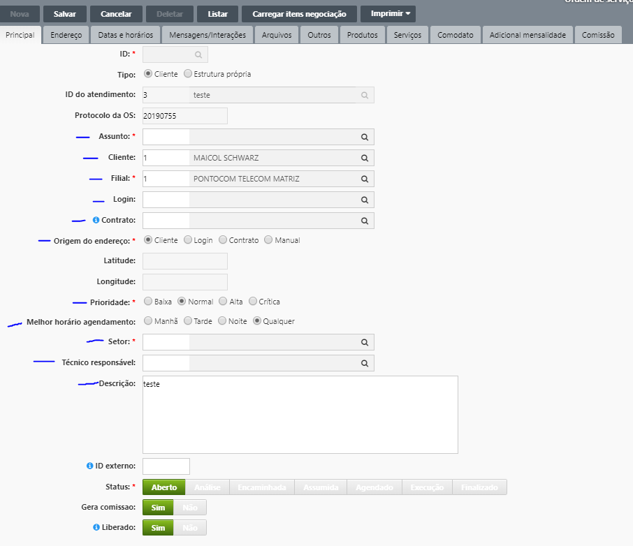

Abrir uma OS à partir de um Atendimento
1º
Localize o atendimento, clique nele para selecionar e clique em 'Abrir O.S.'Tela de OS:

2º Preencha as informações necessárias para abrir uma nova Ordem de Serviço
Observações:
Técnico Responsavel - Somente preencher o técnico responsável que vai ser
realizado o atendimento ou na véspera. (pelo motivo de o ténico acabar recebendo várias OS e não
saber o que realmente tem que ser feito naquele dia).
3º Salvar: